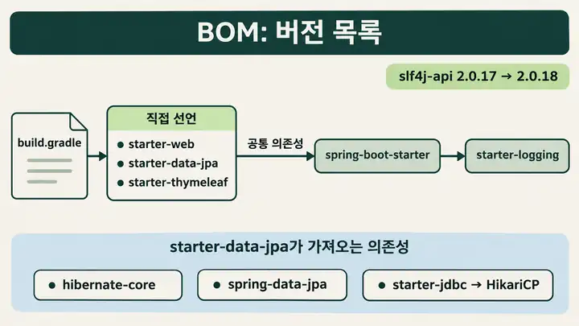
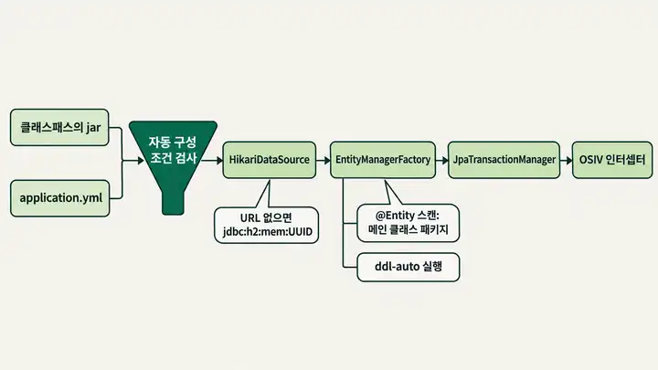
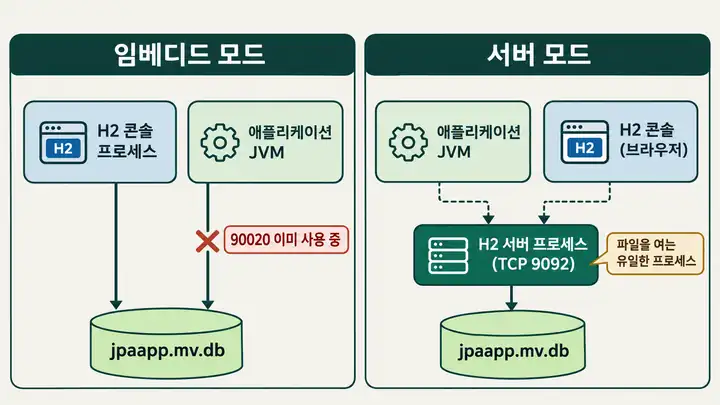
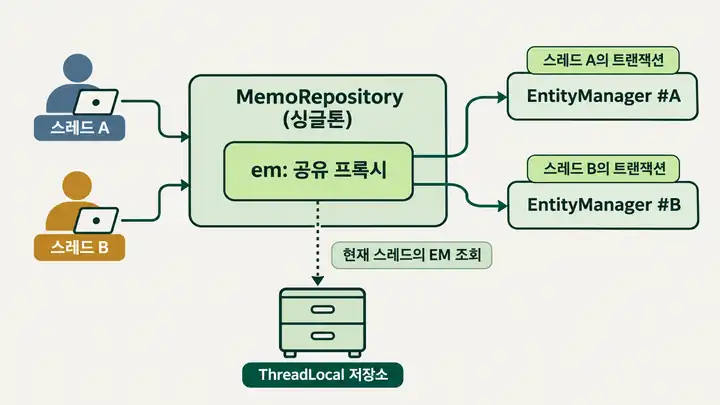

JPA 활용 1 / 01회
프로젝트 환경설정
빌드 스크립트 몇 줄과 설정 파일 몇 줄이 어떤 라이브러리를 클래스패스에 올리고, 그 클래스패스가 어떻게 DataSource·EntityManagerFactory·트랜잭션 매니저로 바뀌는지를 의존성 트리와 실행 로그로 따라간다.
오늘 끝나면 할 수 있는 것
- Gradle의 implementation·compileOnly·runtimeOnly·annotationProcessor가 각각 어느 클래스패스에 jar를 올리는지 설명하고, H2를 runtimeOnly로, Lombok을 compileOnly와 annotationProcessor로 두는 이유를 JDBC 드라이버 로딩과 javap 결과로 보여 줄 수 있다.
- 의존성 트리에서
->,(*),(c)표시를 읽고, 같은 라이브러리의 여러 버전이 요청될 때 하나로 정해져야 하는 이유를 클래스 로더의 동작으로 설명할 수 있다. - 스프링 부트 자동 구성이 클래스패스와 설정값으로부터 HikariCP DataSource, EntityManagerFactory, JpaTransactionManager를 만드는 순서와, ddl-auto 기본값이 H2 URL 모양에 따라 달라지는 규칙을 소스 수준에서 설명할 수 있다.
- H2의 임베디드 파일 모드·서버 모드·메모리 모드를 구분하고, "Database not found"(90149)와 "Database may be already in use"(90020) 오류가 각각 어떤 상황에서 나는지 재현하고 해결할 수 있다.
- JPA 동작 확인 테스트의 로그를 한 줄씩 읽어, 롤백되는 테스트에서 INSERT가 보이지 않는 이유, 같은 트랜잭션에서 조회한 엔티티가 같은 인스턴스인 이유, 트랜잭션 없이 persist하면 실패하는 이유를 설명할 수 있다.
핵심 강의 → 핵심 요약 → 실무 재판단 → 적용 연습 → 이해 확인
01 핵심 강의
이 강의의 차례 · 소제목 12개
- 이 회차의 질문: 첫 줄의 코드를 쓰기 전에 이미 무엇이 정해지는가
- 프로젝트 생성: 빌드 스크립트가 정하는 것
- 라이브러리 살펴보기 1: 의존성 그래프와 버전 결정
- 라이브러리 살펴보기 2: 스타터 하나가 끌어오는 것들
- 클래스패스가 설정이 된다: 자동 구성의 연쇄
- View 환경 설정: 템플릿 엔진과 정적 리소스
- H2 데이터베이스 설치: 파일 하나짜리 데이터베이스와 세 가지 접속 모드
- JPA와 DB 설정: application.yml 한 줄씩 읽기
- 동작 확인 1: 엔티티, 리포지토리, 그리고 주입되는 EntityManager의 정체
- 동작 확인 2: 테스트와 실행 로그를 한 줄씩 읽기
- 흔한 오해와 함정
- 다음 회차와의 연결
이 회차의 질문: 첫 줄의 코드를 쓰기 전에 이미 무엇이 정해지는가
이번 권은 스프링 부트와 JPA로 작은 웹 애플리케이션을 처음부터 끝까지 만든다. 그런데 엔티티 하나를 저장하는 코드를 쓰기도 전에 이미 수십 가지가 정해진다. 어떤 jar가 클래스패스에 올라가는지, 그 jar들의 버전은 무엇인지, 커넥션 풀은 어느 구현을 쓰는지, 테이블은 누가 만드는지, SQL은 어디에 찍히는지, 화면 템플릿은 어느 폴더에서 찾는지. 이 결정의 대부분을 스프링 부트가 기본값으로 대신 내린다. 기본값 덕분에 시작은 빠르지만, 그 기본값을 모르면 문제가 생겼을 때 원인을 찾을 길이 없다.
실제로 환경설정 단계에서 자주 만나는 증상은 이런 것들이다. 애플리케이션은 떴는데 테이블이 없다는 오류가 난다. 설정을 분명히 넣었는데 SQL 로그가 보이지 않는다. 저장 테스트는 초록색으로 통과했는데 로그에 INSERT가 한 줄도 없다. H2 콘솔을 켜 둔 채 애플리케이션을 띄우면 "Database may be already in use"가 난다. 템플릿 파일을 고쳤는데 화면이 그대로다. 이 증상들은 모두 이 회차에서 다루는 기본값과 동작 원리 가운데 하나로 설명된다.
이 권의 회차는 다섯 개다. 이 회차가 무대를 세우고, 02회는 요구 사항에서 도메인 모델과 테이블을 설계하며, 03회는 리포지토리·서비스 계층의 뼈대와 회원 도메인을, 04회는 상품과 주문 도메인을, 05회는 웹 계층을 만들면서 변경 감지와 병합의 차이를 다룬다. 이 회차의 범위는 프로젝트 생성, 라이브러리 구성, 뷰 환경, H2 설치, JPA와 DB 설정 및 동작 확인이다.
방법은 하나로 정했다. 실제로 작은 프로젝트를 만들어 돌리고, 의존성 트리와 실행 로그를 근거로 설명한다. 이 회차의 실험 환경은 JDK 21, 스프링 부트 3.5.16(스프링 프레임워크 6.2.19), Hibernate ORM 6.6.53.Final, H2 2.3.232, HikariCP 6.3.3이다. 부트 3.5.16이 관리하는 버전을 그대로 쓴 것이므로, 3.x의 다른 마이너 버전에서는 숫자가 조금씩 다를 수 있다. 예제 도메인은 이 회차 전용으로 만든 메모(Memo) 엔티티 하나뿐이다.
프로젝트 생성: 빌드 스크립트가 정하는 것
스프링 부트 프로젝트는 보통 start.spring.io에서 뼈대를 받는다. 여기서 고르는 항목은 빌드 도구(Gradle 또는 Maven), 언어, 부트 버전, 그룹과 아티팩트 이름, 패키징, 자바 버전, 그리고 의존성이다. 부트 3.x는 자바 17 이상을 요구하고 서블릿·JPA API를 jakarta.* 패키지로 쓴다. 이 권에서 쓸 의존성은 Spring Web, Thymeleaf, Spring Data JPA, H2 Database, Lombok이다. 뼈대를 받으면 결과물의 중심은 빌드 스크립트 한 장이다. 아래는 그 구성을 보여 주는 Gradle 스크립트 예시다.
plugins {
id 'java'
id 'org.springframework.boot' version '3.5.16'
id 'io.spring.dependency-management' version '1.1.7'
}
group = 'hello'
version = '0.0.1-SNAPSHOT'
java {
toolchain {
languageVersion = JavaLanguageVersion.of(21)
}
}
configurations {
compileOnly {
extendsFrom annotationProcessor
}
}
repositories {
mavenCentral()
}
dependencies {
implementation 'org.springframework.boot:spring-boot-starter-data-jpa'
implementation 'org.springframework.boot:spring-boot-starter-thymeleaf'
implementation 'org.springframework.boot:spring-boot-starter-web'
compileOnly 'org.projectlombok:lombok'
runtimeOnly 'com.h2database:h2'
annotationProcessor 'org.projectlombok:lombok'
testImplementation 'org.springframework.boot:spring-boot-starter-test'
testRuntimeOnly 'org.junit.platform:junit-platform-launcher'
}
tasks.named('test') {
useJUnitPlatform()
}먼저 눈에 띄는 것은 dependencies 블록에 버전 번호가 하나도 없다는 점이다. 버전은 io.spring.dependency-management 플러그인이 스프링 부트의 BOM(Bill of Materials)에서 채운다. BOM은 "이 부트 버전이 지원하는 라이브러리 버전 목록"을 담은 Maven POM이다. 부트 3.5.16의 spring-boot-dependencies POM을 열면 h2.version은 2.3.232, hibernate.version은 6.6.53.Final, hikaricp.version은 6.3.3, lombok.version은 1.18.46으로 적혀 있다. 부트 버전 하나를 고르는 순간 수십 개 라이브러리의 버전 조합이 함께 정해지는 셈이다.
두 번째로 볼 것은 의존성마다 붙은 구성(configuration) 이름이다. 이 이름은 그 jar를 어느 클래스패스에 올릴지를 정한다. 자바 컴파일러에게 주는 클래스패스, 실행할 때 JVM에게 주는 클래스패스, 컴파일 중에 애너테이션 프로세서를 돌리는 프로세서 경로는 서로 다른 목록이다.
| 구성 | 컴파일 클래스패스 | 실행 클래스패스 | 프로세서 경로 | 이 프로젝트의 예 |
|---|---|---|---|---|
implementation | 올라감 | 올라감 | 아니오 | 스타터들 |
compileOnly | 올라감 | 안 올라감 | 아니오 | Lombok 애너테이션 |
runtimeOnly | 안 올라감 | 올라감 | 아니오 | H2 드라이버 |
annotationProcessor | 아니오 | 아니오 | 올라감 | Lombok 프로세서 |
testImplementation | 테스트 컴파일에만 | 테스트 실행에만 | 아니오 | spring-boot-starter-test |
H2는 왜 runtimeOnly인가
우리 코드는 H2의 클래스를 한 번도 import하지 않는다. 데이터베이스와의 대화는 java.sql과 javax.sql의 인터페이스(Connection, PreparedStatement, DataSource)로만 한다. 앞 권에서 본 것처럼 JDBC 4부터 DriverManager는 서비스 제공자 메커니즘으로 드라이버를 찾는다. 드라이버 jar 안의 META-INF/services/java.sql.Driver 파일에 구현 클래스 이름(H2는 org.h2.Driver)이 적혀 있고, 실행 시점에 클래스패스에서 이 파일을 읽어 드라이버를 등록한다. 그래서 H2는 컴파일할 때는 필요 없고 실행할 때만 있으면 된다. runtimeOnly로 두면 실수로 org.h2 패키지를 import하는 코드를 쓰는 순간 컴파일이 실패하므로, 데이터베이스를 MySQL로 바꿀 때 코드 수정이 필요 없다는 사실을 빌드가 지켜 준다.
Lombok은 왜 compileOnly이면서 annotationProcessor인가
Lombok은 @Getter 같은 애너테이션을 보고 컴파일 시점에 메서드를 만들어 넣는다. 이 회차의 엔티티는 소스에 getter를 한 줄도 쓰지 않고 @Getter만 붙였다. 컴파일된 클래스 파일을 javap -p로 열면 다음과 같다.
Compiled from "Memo.java"
public class hello.setup.Memo {
private java.lang.Long id;
private java.lang.String writerName;
private java.lang.String content;
protected hello.setup.Memo();
public hello.setup.Memo(java.lang.String, java.lang.String);
public java.lang.Long getId();
public java.lang.String getWriterName();
public java.lang.String getContent();
}getter 세 개가 같은 클래스 파일 안에 들어 있다. 자바 표준의 애너테이션 처리 API(JSR 269, javax.annotation.processing)에서 프로세서가 결과물을 내는 통로인 Filer는 Javadoc 설명대로 새 소스·클래스·보조 파일을 만드는 기능을 제공한다. 이미 있는 클래스에 메서드를 끼워 넣는 표준 수단은 없다. 그런데도 결과가 이렇다는 것은 Lombok이 표준 API의 범위를 넘어 컴파일러 내부의 구문 트리를 고친다는 뜻이다. 이 사실에서 두 가지가 따라 나온다. 하나, Lombok은 컴파일 중에만 일하고 실행 시점에는 할 일이 없으므로 실행 클래스패스에 올릴 필요가 없다(compileOnly). 둘, 프로세서로 돌아야 하므로 annotationProcessor 경로에도 있어야 한다. 스크립트의 configurations { compileOnly { extendsFrom annotationProcessor } }는 annotationProcessor에 넣은 의존성을 compileOnly에도 상속시키는 설정이다.
IDE에서 Gradle을 거치지 않고 자체 컴파일러로 빌드하도록 설정했다면, IDE의 애너테이션 처리 옵션이 켜져 있어야 Lombok이 동작한다. 꺼져 있으면 Gradle 빌드는 성공하는데 IDE 빌드만 getter 호출 지점에서 cannot find symbol 오류로 실패하는 엇갈린 증상이 나온다. 두 빌드가 서로 다른 컴파일러 설정을 쓰기 때문이다.
라이브러리 살펴보기 1: 의존성 그래프와 버전 결정
빌드 스크립트에 적은 의존성은 스타터 세 개와 H2뿐인데, 실행 클래스패스에는 수십 개의 jar가 올라간다. 각 jar의 POM이 다시 자기 의존성을 선언하기 때문이다. 이것을 전이 의존성(transitive dependency)이라 한다. 실제 그래프는 ./gradlew dependencies --configuration runtimeClasspath로 볼 수 있다. 아래는 실험 프로젝트에서 출력된 트리의 일부다(줄 일부를 생략했다).
+--- org.springframework.boot:spring-boot-starter-data-jpa -> 3.5.16
| +--- org.springframework.boot:spring-boot-starter:3.5.16
| | +--- org.springframework.boot:spring-boot:3.5.16
| | | +--- org.springframework:spring-core:6.2.19
| | | | \--- org.springframework:spring-jcl:6.2.19
| | | \--- org.springframework:spring-context:6.2.19
| | +--- org.springframework.boot:spring-boot-autoconfigure:3.5.16
| | +--- org.springframework.boot:spring-boot-starter-logging:3.5.16
| | | +--- ch.qos.logback:logback-classic:1.5.34
| | | | +--- ch.qos.logback:logback-core:1.5.34
| | | | \--- org.slf4j:slf4j-api:2.0.17 -> 2.0.18
| | | +--- org.apache.logging.log4j:log4j-to-slf4j:2.24.3
| | | | +--- org.apache.logging.log4j:log4j-api:2.24.3
| | | | \--- org.slf4j:slf4j-api:2.0.16 -> 2.0.18
| | | \--- org.slf4j:jul-to-slf4j:2.0.18
| | +--- jakarta.annotation:jakarta.annotation-api:2.1.1
| | +--- org.springframework:spring-core:6.2.19 (*)
| | \--- org.yaml:snakeyaml:2.4
| +--- org.springframework.boot:spring-boot-starter-jdbc:3.5.16
| | +--- org.springframework.boot:spring-boot-starter:3.5.16 (*)
| | +--- com.zaxxer:HikariCP:6.3.3
| | \--- org.springframework:spring-jdbc:6.2.19
| | \--- org.springframework:spring-tx:6.2.19
| +--- org.hibernate.orm:hibernate-core:6.6.53.Final
| | +--- jakarta.persistence:jakarta.persistence-api:3.1.0
| | +--- jakarta.transaction:jakarta.transaction-api:2.0.1
| | +--- org.jboss.logging:jboss-logging:3.5.0.Final -> 3.6.3.Final
| | +--- com.fasterxml:classmate:1.5.1 -> 1.7.3
| | +--- net.bytebuddy:byte-buddy:1.17.8
| | +--- org.antlr:antlr4-runtime:4.13.2
| | \--- ...
| +--- org.springframework.data:spring-data-jpa:3.5.13
| | +--- org.springframework.data:spring-data-commons:3.5.13
| | +--- org.springframework:spring-orm:6.2.19
| | \--- ...
| \--- org.springframework:spring-aspects:6.2.19
...
\--- com.h2database:h2 -> 2.3.232트리에는 세 가지 표시가 있다. A -> B는 "A 버전이 요청되었지만 B 버전으로 결정되었다"는 뜻이다. 맨 위의 spring-boot-starter-data-jpa -> 3.5.16은 버전 없이 선언한 의존성에 BOM이 3.5.16을 채운 것이고, slf4j-api:2.0.17 -> 2.0.18은 logback-classic이 2.0.17을 원했지만 최종적으로 2.0.18이 쓰인다는 뜻이다. (*)는 "이 노드의 하위 트리는 위에서 이미 출력했으므로 생략한다"는 표시다. spring-core는 거의 모든 스프링 모듈이 의존하므로 트리 곳곳에 (*)로 나타난다. (c)는 BOM 같은 플랫폼이 건 버전 제약(constraint)이 트리에 나타난 줄이다.
왜 버전을 하나로 정해야 할까. slf4j-api 2.0.16, 2.0.17, 2.0.18 jar를 모두 클래스패스에 올리면 안 되는가. 답은 JVM의 클래스 로딩 규칙에 있다. 클래스 로더는 클래스를 이름(패키지까지 포함한 정규화된 이름)으로 찾고, 한 로더 안에서 같은 이름의 클래스는 한 번만 정의된다. 애플리케이션 클래스 로더는 클래스패스의 jar를 앞에서부터 뒤져 처음 찾은 org.slf4j.Logger를 쓴다. 같은 클래스의 여러 버전이 클래스패스에 섞여 있으면 어떤 버전이 쓰일지가 jar 순서라는 우연에 달리게 되고, 한 버전의 Logger와 다른 버전의 LoggerFactory가 섞여 로딩되면 NoSuchMethodError 같은 링크 오류가 실행 도중에 터진다. 빌드 도구가 버전 충돌을 해결해 하나만 남기는 이유가 여기에 있다.
Gradle은 같은 모듈의 여러 버전이 요청되면 기본적으로 그중 가장 높은 버전을 고른다. 여기에 BOM의 제약이 더해진다. 부트 BOM이 slf4j를 2.0.18로 지정했으므로 결과는 2.0.18이다. jboss-logging이 3.5.0.Final에서 3.6.3.Final로, classmate가 1.5.1에서 1.7.3으로 올라간 것도 같은 원리다. 이 말은 곧 Hibernate가 자기 POM에 적은 것과 다른 버전의 라이브러리 위에서 돌아간다는 뜻이기도 하다. 부트 문서는 BOM을 각 부트 릴리스가 지원하는 의존성의 선별 목록(curated list)이라고 설명하므로, 특별한 이유 없이 BOM이 정한 버전을 개별적으로 덮어쓰지 않는 것이 안전하다.

라이브러리 살펴보기 2: 스타터 하나가 끌어오는 것들
스타터(starter)의 정체부터 보자. 부트 3.5.16의 spring-boot-starter-data-jpa jar를 열면 META-INF/MANIFEST.MF와 라이선스 파일뿐이고 클래스는 하나도 없다. 스타터의 본체는 POM에 적힌 의존성 목록이다. 즉 스타터는 "이 기능을 쓰려면 함께 있어야 하는 jar 묶음"에 이름을 붙인 것이다. 부트 3.5.16 기준으로 각 스타터가 직접 선언한 의존성은 다음과 같다.
| 스타터 | 직접 의존성(3.5.16 POM 기준) | 하는 일 |
|---|---|---|
| spring-boot-starter | spring-boot, spring-boot-autoconfigure, spring-boot-starter-logging, jakarta.annotation-api, spring-core, snakeyaml | 모든 스타터의 공통 기반. 자동 구성과 YAML 설정 파일 읽기, 로깅 |
| spring-boot-starter-web | spring-boot-starter, spring-boot-starter-json, spring-boot-starter-tomcat, spring-web, spring-webmvc | 내장 톰캣 10.1.55와 스프링 MVC, Jackson |
| spring-boot-starter-thymeleaf | spring-boot-starter, thymeleaf-spring6 | 템플릿 엔진 Thymeleaf 3.1.5와 스프링 통합 |
| spring-boot-starter-data-jpa | spring-boot-starter, spring-boot-starter-jdbc, hibernate-core, spring-data-jpa, spring-aspects | JPA 구현체, 스프링의 JPA 통합, 스프링 데이터 리포지토리 |
| spring-boot-starter-jdbc | spring-boot-starter, HikariCP, spring-jdbc | 커넥션 풀과 JdbcTemplate, 트랜잭션 추상화(spring-tx) |
| spring-boot-starter-logging | logback-classic, log4j-to-slf4j, jul-to-slf4j | SLF4J 구현체 Logback과 다른 로깅 API의 브리지 |
| spring-boot-starter-test | spring-boot-test, spring-boot-test-autoconfigure, spring-test, junit-jupiter, assertj-core, mockito-core, mockito-junit-jupiter, hamcrest, json-path, jsonassert, awaitility, xmlunit-core 등 | 테스트 실행과 단언, 목 객체, 스프링 컨텍스트 테스트 |
스타터 구성은 부트 버전에 따라 바뀐다. 예를 들어 3.5.16의 data-jpa 스타터 POM에는 spring-boot-starter-aop가 없고 spring-aspects가 있다. 다른 문서나 오래된 프로젝트의 트리와 비교할 때는 버전부터 맞춰 보아야 한다. 목록을 외울 필요는 없고, 의존성 트리를 직접 열어 확인하는 습관이 중요하다.
hibernate-core 아래에 있는 것들
hibernate-core의 의존성 목록은 Hibernate가 내부에서 무엇을 하는지 보여 주는 지도다. jakarta.persistence-api 3.1.0은 JPA 명세의 인터페이스와 애너테이션(@Entity, EntityManager)이 들어 있는 API jar다. 우리 코드는 이 API에만 의존하고, Hibernate는 그 구현을 제공한다. byte-buddy는 실행 중에 바이트코드를 만들어 새 클래스를 정의하는 라이브러리로, Hibernate는 지연 로딩용 프록시 클래스 같은 것을 만들 때 이것을 쓴다. 앞 권에서 스프링 AOP가 CGLIB로 프록시 클래스를 런타임에 만든 것과 같은 계열의 기술이다. antlr4-runtime은 파서 생성기 ANTLR의 런타임으로, Hibernate 6는 JPQL·HQL 문자열을 이것으로 파싱해 내부 구문 트리로 바꾼 뒤 SQL을 만든다. jboss-logging은 Hibernate가 쓰는 로깅 퍼사드로, 실행 환경에서 쓸 수 있는 로깅 백엔드를 찾아 거기에 위임한다.
로깅이 하나로 모이는 구조
한 애플리케이션 안에는 서로 다른 로깅 API를 쓰는 라이브러리가 섞여 있다. 스프링은 spring-jcl을, Hibernate는 jboss-logging을, 어떤 라이브러리는 JDK의 java.util.logging을, 어떤 라이브러리는 Log4j 2 API를 쓴다. 부트는 이것들을 SLF4J라는 퍼사드 하나로 모으고 실제 출력은 Logback 하나가 맡게 한다. jul-to-slf4j와 log4j-to-slf4j가 각각 JUL과 Log4j 2 API 호출을 SLF4J로 넘기는 브리지다. 그래서 뒤에서 볼 실행 로그에서 Hibernate의 org.hibernate.SQL 로그와 HikariCP 로그, 스프링 로그가 모두 같은 형식(시각, 레벨, 프로세스 ID, 스레드, 로거 이름)으로 찍힌다. 이 구조를 알면 "Hibernate 로그 레벨을 어디서 바꾸는가"라는 질문의 답이 분명해진다. 출력 담당이 Logback 하나이므로, 부트의 logging.level.* 설정 한 곳에서 모든 라이브러리의 레벨을 바꾼다.
클래스패스가 설정이 된다: 자동 구성의 연쇄
jar를 클래스패스에 올리는 것만으로 왜 DataSource와 EntityManagerFactory가 생길까. 출발점은 메인 클래스의 @SpringBootApplication이다. 이 애너테이션은 @SpringBootConfiguration, @EnableAutoConfiguration, @ComponentScan을 합친 것이다. @EnableAutoConfiguration은 각 jar의 META-INF/spring/org.springframework.boot.autoconfigure.AutoConfiguration.imports 파일에 나열된 자동 구성 클래스를 후보로 읽는다. 후보 클래스마다 @ConditionalOnClass, @ConditionalOnMissingBean, @ConditionalOnProperty 같은 조건이 붙어 있어서, 조건을 만족한 것만 빈을 등록한다. 클래스패스에 무엇이 있는지가 곧 조건의 입력이므로, 빌드 스크립트가 설정의 일부가 된다.
이 회차와 관련된 연쇄를 부트 3.5.16 소스로 따라가 보자. DataSourceAutoConfiguration은 사용자가 DataSource 빈을 직접 등록하지 않았을 때만 동작한다. 커넥션 풀 구성은 @Import({ DataSourceConfiguration.Hikari.class, DataSourceConfiguration.Tomcat.class, DataSourceConfiguration.Dbcp2.class, DataSourceConfiguration.OracleUcp.class, DataSourceConfiguration.Generic.class, ... }) 순서로 시도되고, 각 구성은 해당 풀 클래스가 클래스패스에 있고 아직 DataSource 빈이 없을 때만 빈을 만든다. starter-jdbc가 HikariCP를 가져오므로 첫 번째인 Hikari 구성이 성공하고, 나머지는 "이미 DataSource가 있다"는 조건 때문에 건너뛴다.
URL을 하나도 설정하지 않으면 어떻게 될까. DataSourceProperties.determineUrl()은 spring.datasource.url이 비어 있으면 클래스패스에서 찾은 임베디드 데이터베이스의 URL 틀을 쓴다. H2의 틀은 jdbc:h2:mem:%s;DB_CLOSE_DELAY=-1;DB_CLOSE_ON_EXIT=FALSE이고, %s 자리에는 spring.datasource.generate-unique-name(기본값 true)에 따라 무작위 UUID가 들어간다. 즉 H2를 클래스패스에 두고 URL을 비워 두면 애플리케이션은 매번 새 이름의 메모리 데이터베이스로 뜬다. 테스트에서 아무 설정 없이도 JPA가 동작하는 이유가 이것이다.
DataSource가 생기면 HibernateJpaAutoConfiguration이 이어받는다. 이 구성은 스프링의 LocalContainerEntityManagerFactoryBean으로 EntityManagerFactory를 만든다. 전통적인 JPA는 META-INF/persistence.xml에 영속성 유닛(persistence unit)을 정의하지만, 스프링은 그 정보를 코드로 채워 넣으므로 파일이 필요 없다. 실행 로그의 Initialized JPA EntityManagerFactory for persistence unit 'default'가 그 결과다. 어떤 패키지에서 @Entity를 찾을지는 JpaBaseConfiguration.getPackagesToScan()이 정한다. @EntityScan으로 지정한 패키지가 있으면 그것을, 없으면 자동 구성 패키지, 곧 @SpringBootApplication이 붙은 클래스의 패키지와 그 하위를 쓴다. 엔티티를 메인 클래스보다 바깥 패키지에 두면 Hibernate가 그 클래스를 엔티티로 알지 못해, persist할 때 "Unable to locate persister", 메타모델에서 그 타입을 찾을 때 "Not a managed type" 오류가 나는(Hibernate 6.6.53에서 확인) 이유가 여기에 있다.
마지막으로 같은 JpaBaseConfiguration이 transactionManager라는 이름으로 JpaTransactionManager를 등록한다. 앞 권에서 본 트랜잭션 추상화의 JPA 구현이다. @Transactional이 붙은 메서드가 시작되면 이 매니저가 EntityManager를 열고, 그 아래의 JDBC 커넥션에서 트랜잭션을 시작하고, 둘을 현재 스레드에 묶는다. 웹 애플리케이션이면 spring.jpa.open-in-view가 설정되지 않았을 때 요청 전체에 EntityManager를 열어 두는 인터셉터를 등록하면서 경고를 남긴다. 이 경고는 실행 로그에서 다시 보고, OSIV(Open Session In View)의 의미와 비용은 VOL 17 「JPA 활용 2」에서 깊이 다룬다.
- 자동 구성 후보 읽기@EnableAutoConfiguration이 각 jar의 AutoConfiguration.imports에서 후보 클래스 목록을 읽는다.
- DataSourceHikariCP가 클래스패스에 있으므로 HikariDataSource를 만든다. URL이 없으면 H2 메모리 DB URL을 UUID 이름으로 만든다.
- EntityManagerFactoryLocalContainerEntityManagerFactoryBean이 메인 클래스 패키지에서 @Entity를 찾고, Hibernate를 부트스트랩하며, ddl-auto 설정에 따라 스키마 DDL을 실행한다.
- JpaTransactionManager@Transactional의 시작과 끝에서 EntityManager와 커넥션을 스레드에 묶고 커밋·롤백한다.
- 웹 계층 부가 구성웹 애플리케이션이면 open-in-view 인터셉터를 등록하고, 설정이 없으면 경고 로그를 남긴다.

View 환경 설정: 템플릿 엔진과 정적 리소스
이 권의 웹 계층은 서버에서 HTML을 만들어 내려보내는 방식이다. 컨트롤러가 뷰 이름을 문자열로 돌려주면 스프링 MVC의 DispatcherServlet이 뷰 리졸버(ViewResolver)에게 그 이름에 해당하는 뷰를 찾게 하고, 뷰가 모델 데이터를 채워 HTML을 렌더링한다. 앞 권의 스프링 MVC에서 본 흐름 그대로다. Thymeleaf 스타터가 클래스패스에 있으면 부트가 ThymeleafViewResolver와 템플릿 리졸버를 자동으로 등록하고, 템플릿 위치의 기본값은 ThymeleafProperties에 상수로 정해져 있다. 접두사(prefix)는 classpath:/templates/, 접미사(suffix)는 .html이다.
@Controller
public class GreetingController {
@GetMapping("/greeting")
public String greeting(Model model) {
model.addAttribute("name", "spring");
return "greeting"; // 뷰 이름
}
}이 컨트롤러가 돌려준 "greeting"은 접두사와 접미사 사이에 끼워져 classpath:/templates/greeting.html이라는 자원 경로가 된다. 소스 트리에서는 src/main/resources/templates/greeting.html에 둔 파일이다. 여기서 주의할 점은 경로가 classpath:로 시작한다는 것이다. 실행 중인 애플리케이션은 src 폴더를 읽지 않는다. 빌드가 src/main/resources의 파일을 빌드 출력 폴더(Gradle은 build/resources/main)로 복사하고, 그 폴더가 클래스패스에 올라간다. 그래서 소스의 템플릿을 고쳐도 다시 빌드해 복사하기 전까지는 실행 중인 애플리케이션이 옛 파일을 본다.
<!DOCTYPE html>
<html xmlns:th="http://www.thymeleaf.org">
<head><meta charset="UTF-8"><title>Greeting</title></head>
<body>
<p th:text="'안녕하세요, ' + ${name}">안녕하세요, 손님</p>
</body>
</html>Thymeleaf 템플릿은 그 자체로 유효한 HTML이다. th:text 같은 속성은 브라우저가 모르는 속성이라 무시되므로, 파일을 브라우저로 직접 열면 "안녕하세요, 손님"이 보인다. 서버를 거쳐 렌더링되면 Thymeleaf가 th:text의 식을 평가해 태그의 본문을 "안녕하세요, spring"으로 바꾼다. 이런 성질을 내추럴 템플릿(natural template)이라 부른다. 디자이너가 만든 HTML에 속성만 덧붙여 템플릿으로 쓸 수 있다는 것이 장점이다.
템플릿이 아닌 정적 파일은 다른 경로에서 찾는다. 부트의 WebProperties가 정한 정적 리소스 위치는 classpath:/META-INF/resources/, classpath:/resources/, classpath:/static/, classpath:/public/ 네 곳이다. 이 가운데 static/index.html을 두면 루트 경로(/) 요청에 그 파일이 응답되는 환영 페이지(welcome page)가 된다. 부트는 정적 index.html과 템플릿 index를 모두 지원하고, 둘 다 있으면 정적 페이지를 우선한다(WelcomePageHandlerMapping의 문서 주석). 정적 파일은 서버가 손대지 않고 그대로 내려보내므로 th:* 속성을 넣어도 처리되지 않는다.
Thymeleaf 스타터만 넣고 templates 폴더를 아직 만들지 않았다면, 시작 로그에 다음 경고가 찍힌다. 이 회차의 실험 프로젝트에서 실제로 본 줄이다. 오류가 아니라 "템플릿 위치가 비어 있다"는 알림이므로, 템플릿을 하나 만들면 사라진다.
WARN ... : Cannot find template location: classpath:/templates/ (please add some templates, check your Thymeleaf configuration, or set spring.thymeleaf.check-template-location=false)템플릿 캐시와 devtools
Thymeleaf는 템플릿 파일을 읽어 파싱한 결과를 캐시해 두고 다음 요청부터 재사용한다. 운영에서는 매 요청마다 파일을 다시 읽고 파싱하는 비용을 없애 주는 좋은 기본값이지만, 개발 중에는 파일을 고쳐도 화면이 바뀌지 않는 원인이 된다. spring-boot-devtools를 개발용 의존성으로 추가하면 이런 캐시 옵션을 기본으로 끈다. 부트 참조 문서의 devtools 속성 기본값 표에 spring.thymeleaf.cache가 false로 적혀 있다.
devtools의 재시작은 클래스 로더 두 개로 구현된다. 바뀌지 않는 라이브러리 jar의 클래스는 기본(base) 클래스 로더가, 개발 중인 프로젝트의 클래스는 재시작(restart) 클래스 로더가 로딩한다. 클래스패스의 파일이 바뀌면 재시작 클래스 로더를 버리고 새로 만들어 프로젝트 클래스만 다시 로딩하므로, JVM을 새로 띄우는 것보다 빠르다. JVM에서 클래스는 자신을 정의한 클래스 로더와 짝을 이루므로, 로더를 새로 만들면 같은 이름의 클래스를 새 바이트코드로 다시 정의할 수 있다. 옛 로더와 그 클래스들은 참조가 모두 끊기면 GC가 회수할 수 있다. 문서에 따르면 /static, /templates 같은 위치의 파일 변경은 재시작을 일으키지 않고 라이브 리로드만 일으킨다. 그리고 재시작의 계기는 언제나 클래스패스의 변경이므로, IDE에서 빌드(또는 리컴파일)를 해 빌드 출력 폴더를 갱신해야 반영된다. java -jar로 실행한 완전히 패키징된 애플리케이션에서는 devtools가 자동으로 꺼진다.
H2 데이터베이스 설치: 파일 하나짜리 데이터베이스와 세 가지 접속 모드
H2는 자바로 작성된 관계형 데이터베이스다. 배포물의 핵심은 jar 하나이고, 그 jar 안에 데이터베이스 엔진, JDBC 드라이버, TCP 서버, 웹 콘솔이 모두 들어 있다. 설치는 공식 사이트에서 배포 파일을 받아 압축을 풀고 bin/h2.sh(윈도우는 h2.bat)를 실행하는 것이 전부다. 이 스크립트가 실행하는 org.h2.tools.Console의 도움말은 "옵션 없이 실행하면 -tcp, -web, -browser, -pg가 시작된다"고 적고 있다. 즉 H2 프로세스 하나가 TCP 서버, 웹 콘솔 서버, PostgreSQL 프로토콜 서버를 함께 띄우고 브라우저로 콘솔을 연다. org.h2.tools.Server의 도움말에 따르면 기본 포트는 TCP 9092, 웹 콘솔 8082다.
설치할 H2 버전은 애플리케이션이 쓰는 H2 jar의 버전에 맞춘다. 부트 3.5.16이 관리하는 버전은 2.3.232다. 버전을 맞추는 이유는 서버 모드의 구조에서 나온다. 서버 모드에서 데이터베이스 파일을 열고 쓰는 것은 H2 서버 프로세스이고, 애플리케이션 쪽 jar는 TCP로 서버와 대화하는 드라이버 노릇만 한다. 파일의 형식은 서버 쪽 H2 버전이 결정하고, 드라이버와 서버는 같은 프로토콜을 이해해야 한다. 특히 1.4.x와 2.x 사이에는 큰 변경이 있어서, H2의 2.x 이전 안내 문서는 단순 업그레이드가 불가능하다고 밝히고 구버전으로 SCRIPT를 실행해 내보낸 뒤 2.x에서 RUNSCRIPT로 들여오는 방법을 공식 경로로 제시한다.
H2는 같은 데이터베이스에 접속하는 방법을 URL 모양으로 구분한다.
| 모드 | URL 예 | 파일을 여는 프로세스 | 특징 |
|---|---|---|---|
| 임베디드 파일 모드 | jdbc:h2:~/jpaapp | URL로 접속한 그 JVM | 파일이 없으면 새로 만든다. 그 JVM이 파일을 독점한다 |
| 서버 모드 | jdbc:h2:tcp://localhost/~/jpaapp | H2 서버 프로세스 | 여러 프로세스가 서버를 거쳐 동시에 접속한다. 기본적으로 원격 접속으로는 새 DB를 만들지 않는다 |
| 메모리 모드 | jdbc:h2:mem:test | URL로 접속한 그 JVM | 파일이 없다. 기본적으로 마지막 커넥션이 닫히면 내용이 사라진다 |
URL의 ~는 사용자 홈 디렉터리를 뜻한다(H2 기능 문서: "To point to the user home directory, use ~/"). 서버 모드에서는 서버 프로세스의 홈 디렉터리다. 그리고 H2 2.x의 파일 데이터베이스는 이름 뒤에 .mv.db가 붙은 파일 하나로 저장된다. MVStore라는 H2의 저장 엔진이 쓰는 형식이다.
직접 확인한 세 가지 동작
설치 단계에서 겪는 문제는 대부분 "누가 파일을 여는가"를 놓쳐서 생긴다. 다음 프로그램으로 확인해 보자. 먼저 H2 2.3.232 jar로 TCP 서버를 19092 포트에 띄워 두고(java -cp h2-2.3.232.jar org.h2.tools.Server -tcp -tcpPort 19092), 다른 프로세스에서 이 프로그램을 실행했다. 인자로 실험용 디렉터리 경로를 준다.
import java.sql.*;
import java.nio.file.*;
public class H2Probe {
public static void main(String[] args) throws Exception {
String dir = args[0];
// 1) 임베디드 파일 모드: 첫 접속이 파일을 만든다
try (Connection c = DriverManager.getConnection("jdbc:h2:" + dir + "/shopdb", "sa", "")) {
c.createStatement().execute("create table t(id int)");
}
try (var s = Files.list(Path.of(dir))) {
s.forEach(p -> System.out.println("file: " + p.getFileName()));
}
// 2) 서버 모드로 없는 DB에 접속
try (Connection c = DriverManager.getConnection("jdbc:h2:tcp://localhost:19092/" + dir + "/nodb", "sa", "")) {
System.out.println("remote create ok");
} catch (SQLException e) {
System.out.println("remote create: " + e.getErrorCode() + " " + e.getMessage().split("\n")[0]);
}
// 3) 서버가 파일을 연 상태에서 이 프로세스가 임베디드로 같은 파일을 연다
try (Connection remote = DriverManager.getConnection("jdbc:h2:tcp://localhost:19092/" + dir + "/shopdb", "sa", "")) {
System.out.println("remote open ok");
try (Connection local = DriverManager.getConnection("jdbc:h2:" + dir + "/shopdb", "sa", "")) {
System.out.println("embedded open ok");
} catch (SQLException e) {
System.out.println("embedded open: " + e.getErrorCode() + " " + e.getMessage().split("\n")[0]);
}
}
}
}TCP server running at tcp://localhost:19092 (only local connections)
file: shopdb.mv.db
remote create: 90149 Database "DIR/nodb" not found, either pre-create it or allow remote database creation (not recommended in secure environments) [90149-232]
remote open ok
embedded open: 90020 Database may be already in use: "DIR/shopdb.mv.db". Possible solutions: close all other connection(s); use the server mode [90020-232]첫 줄은 서버 쪽 출력이다. "only local connections"는 기본 설정에서 다른 컴퓨터의 접속을 받지 않는다는 뜻이고, 허용하려면 -tcpAllowOthers 옵션이 필요하다. 이어지는 결과를 하나씩 읽어 보자.
- 임베디드 URL은 파일을 만든다. 처음 접속했을 뿐인데
shopdb.mv.db가 생겼다. H2 기능 문서도 임베디드 URL을 쓰면 데이터베이스가 없을 때 기본으로 새로 만든다고 적고 있다. - 서버 모드는 기본적으로 새 데이터베이스를 만들지 않는다. 없는
nodb에 TCP로 접속하자 오류 90149가 났다. 메시지가 말하듯 미리 만들어 두거나, 서버를-ifNotExists옵션으로 띄워 원격 생성을 허용해야 한다. 메시지 스스로 보안 환경에서는 권하지 않는다고 적고 있다. 네트워크 너머의 누구든 서버 디스크에 파일을 만들 수 있게 되기 때문이다. - 파일은 한 프로세스만 연다. 서버가
shopdb를 열고 있는 동안 다른 프로세스가 임베디드 URL로 같은 파일을 열려 하자 오류 90020이 났다. 임베디드 모드에서는 파일을 연 JVM이 엔진을 직접 돌리며 파일을 독점하기 때문이다. 메시지의 해결책 두 가지가 곧 원리다. 다른 커넥션을 닫거나, 서버 모드로 접속해 파일을 연 프로세스에게 일을 맡기라는 것이다.
이 세 가지를 합치면 H2 서버 모드를 처음 준비하는 절차가 나온다. H2 콘솔을 띄우고 콘솔 화면에서 임베디드 URL(jdbc:h2:~/jpaapp)로 한 번 접속하면 데이터베이스 파일이 만들어진다. 콘솔의 웹 서버는 H2 프로세스 안에서 돌기 때문에, 이 접속은 H2 프로세스가 자기 홈 디렉터리에 파일을 만드는 일이 된다. 그다음부터 콘솔과 애플리케이션 모두 TCP URL(jdbc:h2:tcp://localhost/~/jpaapp)로 접속하면, 파일은 H2 서버 프로세스 하나만 열고 나머지는 모두 그 서버를 거친다. 애플리케이션이 임베디드 URL로 접속하면 콘솔을 띄운 H2 프로세스와 애플리케이션 JVM이 같은 파일을 두고 다투게 되어 90020이 난다. 서버를 따로 띄우지 않고 여러 프로세스가 같은 파일을 쓰게 하는 ;AUTO_SERVER=TRUE라는 혼합 모드도 있는데, 문서가 밝히듯 메모리 데이터베이스에는 쓸 수 없다.
메모리 모드는 테스트에 알맞다. 파일이 남지 않으므로 테스트끼리 데이터가 섞이지 않는다. 다만 H2 문서대로 기본적으로는 마지막 커넥션이 닫히면 데이터베이스가 닫히고 내용이 사라지므로, 살려 두려면 URL에 ;DB_CLOSE_DELAY=-1을 붙인다. 앞에서 본 부트의 임베디드 URL 틀에 이 옵션이 이미 들어 있다. 열린 커넥션이 하나도 없는 순간이 생겨도 데이터베이스가 JVM이 끝날 때까지 유지되게 하는 설정이다.

JPA와 DB 설정: application.yml 한 줄씩 읽기
H2 서버가 준비되었으면 애플리케이션에 접속 정보와 JPA 설정을 준다. 부트는 src/main/resources의 application.properties나 application.yml을 읽는다. YAML은 들여쓰기로 계층을 표현하고, 그 계층은 점으로 이은 속성 키와 같다. 들여쓰기는 공백으로 해야 하며, 한 칸만 어긋나도 키가 다른 계층에 붙어 설정이 조용히 무시될 수 있다.
spring:
datasource:
url: jdbc:h2:tcp://localhost/~/jpaapp
username: sa
password:
driver-class-name: org.h2.Driver
jpa:
hibernate:
ddl-auto: create
properties:
hibernate:
format_sql: true
logging:
level:
org.hibernate.SQL: debug
org.hibernate.orm.jdbc.bind: tracespring.datasource: 커넥션을 어디서 얻는가
spring.datasource.url, username, password는 HikariDataSource에 전달되어 풀이 커넥션을 만들 때 쓰인다. driver-class-name은 생략해도 부트가 URL의 접두사(jdbc:h2:)로 드라이버를 추론하지만, 적어 두면 설정만 보고도 어떤 드라이버를 쓰는지 알 수 있다. 커넥션 풀이 하는 일은 앞 권에서 다루었다. 이 회차에서 기억할 것은 커넥션이 처음 필요해지는 시점이 요청 처리 때가 아니라 애플리케이션 시작 과정이라는 사실이다. 뒤의 시작 로그에서 보듯 Hibernate가 EntityManagerFactory를 만들면서 데이터베이스 정보를 확인하려고 첫 커넥션을 요청하고, 그때 Hikari 풀이 시작된다. 따라서 H2 서버를 켜 두지 않으면 첫 요청을 보내기도 전에, 시작 단계에서 접속 실패를 만난다.
spring.jpa.hibernate.ddl-auto: 스키마는 누가 만드는가
ddl-auto는 애플리케이션이 시작할 때 Hibernate가 엔티티 매핑을 보고 스키마에 무엇을 할지 정한다. 부트 문서가 나열하는 값은 none, validate, update, create, create-drop이다.
| 값 | 시작할 때 | 종료할 때 | 쓰는 곳 |
|---|---|---|---|
none | 아무것도 하지 않는다 | 아무것도 하지 않는다 | 운영. 스키마는 별도 도구(DDL 스크립트, Flyway 등)로 관리 |
validate | 매핑과 실제 스키마를 비교해 맞지 않으면 시작 실패 | - | 운영에서 매핑 실수를 일찍 발견할 때 |
update | 없는 테이블·열을 추가하는 변경을 시도한다 | - | 개인 개발 환경 정도. 운영 DB에는 쓰지 않는다 |
create | 관련 테이블과 시퀀스를 지우고 새로 만든다 | 남겨 둔다 | 개발 초기, 매번 깨끗한 스키마가 필요할 때 |
create-drop | create와 같다 | 지운다 | 테스트 |
설정하지 않으면 기본값은 무엇일까. 부트 문서는 "임베디드 데이터베이스이고 Flyway·Liquibase 같은 스키마 관리 도구가 없으면 create-drop, 그 밖에는 none"이라고 적는다. 부트 3.5.16 소스의 HibernateDefaultDdlAutoProvider가 바로 그 규칙이다.
String getDefaultDdlAuto(DataSource dataSource) {
if (!EmbeddedDatabaseConnection.isEmbedded(dataSource)) {
return "none";
}
SchemaManagement schemaManagement = getSchemaManagement(dataSource);
if (SchemaManagement.MANAGED.equals(schemaManagement)) {
return "none";
}
return "create-drop";
}함정은 "임베디드"의 판정에 있다. 같은 소스의 EmbeddedDatabaseConnection.isEmbeddedUrl()은 H2에 대해 url.contains(":h2:mem")을 검사한다. H2라도 URL이 메모리 모드여야 임베디드로 본다는 뜻이다. 따라서 jdbc:h2:tcp://...나 jdbc:h2:~/...를 쓰면서 ddl-auto를 비워 두면 기본값은 none이고, Hibernate는 테이블을 만들지 않는다. 애플리케이션은 문제없이 뜨지만 첫 INSERT에서 테이블이 없다는 SQL 오류가 난다. 같은 H2인데 메모리 URL에서는 되고 파일·서버 URL에서는 안 되는 이유가 이 한 줄의 조건이다.
spring.jpa.properties: Hibernate 고유 설정 통로
spring.jpa.properties.* 아래의 키는 부트가 해석하지 않고 앞부분을 떼어 낸 그대로 JPA 구현체에 넘긴다. spring.jpa.properties.hibernate.format_sql: true는 Hibernate가 받는 hibernate.format_sql=true가 되어, 로그에 찍는 SQL을 줄바꿈과 들여쓰기로 보기 좋게 만든다. 부트가 전용 키를 제공하지 않는 Hibernate 설정은 모두 이 통로로 준다.
SQL 로그: show_sql과 로거의 차이
SQL을 보는 방법은 두 가지가 있다. 하나는 hibernate.show_sql(부트에서는 spring.jpa.show-sql)이고, 다른 하나는 org.hibernate.SQL 로거의 레벨을 DEBUG로 낮추는 것이다. 둘의 차이는 Hibernate 6.6의 SqlStatementLogger 소스에 그대로 드러난다.
private static final Logger LOG = CoreLogging.logger( "org.hibernate.SQL" );
// ...
LOG.debug( statement );
if ( logToStdout ) {
String prefix = highlight ? "\u001b[35m[Hibernate]\u001b[0m " : "Hibernate: ";
System.out.println( prefix + statement );
}SQL은 언제나 org.hibernate.SQL 로거에 DEBUG로 전달되고, show_sql이 켜져 있으면 추가로 System.out.println으로 표준 출력에 찍힌다. 표준 출력은 로깅 프레임워크를 거치지 않으므로 시각·스레드 이름이 붙지 않고, 로그 파일로 보내거나 레벨로 끄는 제어가 통하지 않는다. 두 가지를 다 켜면 같은 SQL이 두 번 찍힌다. 그래서 로거 설정 하나만 쓰는 편이 낫다.
SQL의 ? 자리에 실제로 어떤 값이 바인딩되었는지는 별도 로거가 보여 준다. Hibernate 6.6에서는 org.hibernate.orm.jdbc.bind 로거를 TRACE로 켜면 된다(소스의 JdbcBindingLogging.NAME). 오래된 자료에 나오는 Hibernate 5 시절의 로거 이름은 6에서 쓰이지 않으므로, 버전에 맞는 이름을 써야 한다. 바인딩 값까지 한 줄의 SQL로 합쳐 보고 싶다면 JDBC 드라이버나 DataSource를 프록시로 감싸 PreparedStatement의 setXxx 호출을 가로채는 외부 라이브러리(p6spy 등)를 쓰는 방법도 있다. 원리는 앞 권에서 본 프록시와 같고, 모든 JDBC 호출에 한 단계가 더해지므로 운영 환경에 둘지는 성능을 재 보고 판단한다.
동작 확인 1: 엔티티, 리포지토리, 그리고 주입되는 EntityManager의 정체
이제 설정이 실제로 동작하는지 확인할 최소한의 코드를 쓴다. 엔티티 하나, 그것을 저장하고 찾는 리포지토리 하나, 그리고 테스트다. 테스트에서는 결과를 재현하기 쉽도록 서버 대신 메모리 URL(jdbc:h2:mem:setupcheck)을 쓰고 ddl-auto: create를 명시했다. 나머지 설정은 앞의 YAML과 같다.
package hello.setup;
import jakarta.persistence.Entity;
import jakarta.persistence.GeneratedValue;
import jakarta.persistence.Id;
import lombok.Getter;
@Entity
@Getter
public class Memo {
@Id @GeneratedValue
private Long id;
private String writerName;
private String content;
protected Memo() {}
public Memo(String writerName, String content) {
this.writerName = writerName;
this.content = content;
}
}package hello.setup;
import jakarta.persistence.EntityManager;
import jakarta.persistence.PersistenceContext;
import org.springframework.stereotype.Repository;
@Repository
public class MemoRepository {
@PersistenceContext
private EntityManager em;
public Long save(Memo memo) {
em.persist(memo);
return memo.getId();
}
public Memo find(Long id) {
return em.find(Memo.class, id);
}
public String emClass() { // 실험용: 주입된 객체의 실제 클래스 확인
return em.getClass().getName();
}
}엔티티의 protected Memo() {}는 JPA 명세의 요구다. 명세는 엔티티 클래스에 인자 없는 생성자가 있어야 하고 그 생성자가 public 또는 protected여야 한다고 정한다. Hibernate가 데이터베이스에서 행을 읽어 객체를 만들 때 이 생성자로 인스턴스를 만든 뒤 필드를 채우기 때문이다. protected로 두면 JPA는 쓸 수 있고 애플리케이션 코드가 빈 객체를 함부로 만드는 것은 막을 수 있다. 필드 이름 writerName이 테이블에서 writer_name 열이 된 것도 부트의 기본값 덕분이다. 부트의 HibernateProperties는 물리 명명 전략을 따로 지정하지 않으면 CamelCaseToUnderscoresNamingStrategy를 Hibernate에 넘긴다. 이 전략이 낙타 표기를 밑줄 표기로 바꾸고 소문자로 만든다.
리포지토리의 @Repository는 두 가지 일을 한다. 컴포넌트 스캔 대상이 되어 싱글톤 빈으로 등록되고, 부트가 등록한 PersistenceExceptionTranslationPostProcessor에 의해 JPA 예외를 스프링의 DataAccessException 계층으로 바꾸는 대상이 된다. 앞 권에서 본 예외 추상화가 JPA에도 그대로 적용되는 것이다.
싱글톤에 주입된 EntityManager는 무엇인가
여기서 중요한 질문이 생긴다. MemoRepository는 싱글톤이고, 웹 애플리케이션에서는 여러 요청 스레드가 이 객체의 save를 동시에 호출한다. 그런데 JPA 명세는 EntityManager를 여러 스레드가 동시에 공유하면 안 된다고 정한다. EntityManager는 영속성 컨텍스트라는 상태(이번 트랜잭션에서 다룬 엔티티 목록)를 품고 있기 때문이다. 그러면 필드 하나에 주입된 EntityManager를 모든 스레드가 함께 쓰는 이 코드는 왜 안전할까.
답은 주입되는 객체가 진짜 EntityManager가 아니라는 데 있다. @PersistenceContext는 스프링의 PersistenceAnnotationBeanPostProcessor가 처리하는데, 이것이 주입하는 것은 공유 EntityManager(shared EntityManager)라는 프록시다. 실험에서 emClass()는 jdk.proxy3.$Proxy112를 출력했다(번호는 실행마다 다를 수 있다). JDK 동적 프록시라는 뜻이다. 이 프록시는 상태가 없고, 메서드가 호출될 때마다 "지금 이 스레드의 트랜잭션에 묶인 EntityManager"를 찾아 호출을 넘긴다. 찾는 곳은 앞 권에서 커넥션 동기화를 다룰 때 본 TransactionSynchronizationManager, 곧 스레드별 저장소(ThreadLocal)다. 스레드 A의 호출은 A의 트랜잭션이 연 EntityManager로, 스레드 B의 호출은 B의 것으로 간다. 필드는 하나지만 실제로 일하는 객체는 스레드마다 다르다.
스레드 A: @Transactional 시작
JpaTransactionManager ── EntityManager#A 생성, 커넥션 획득, 트랜잭션 시작
└─ TransactionSynchronizationManager(스레드 A의 ThreadLocal)에 EMF → EntityManager#A 등록
스레드 A: memoRepository.save(memo)
em.persist(memo)
└─ em 은 공유 프록시($Proxy)
└─ 현재 스레드(A)에 등록된 EntityManager 조회 → EntityManager#A.persist(memo)
스레드 B: 트랜잭션 없이 memoRepository.save(memo)
em.persist(memo)
└─ 공유 프록시가 스레드 B에서 트랜잭션에 묶인 EntityManager를 찾지 못함
└─ TransactionRequiredException
└─ @Repository 예외 변환 → InvalidDataAccessApiUsageException

동작 확인 2: 테스트와 실행 로그를 한 줄씩 읽기
세 가지 상황을 테스트 하나에 담았다. 롤백되는 트랜잭션에서 저장하고 조회하기, 커밋되는 트랜잭션에서 저장하기, 트랜잭션 없이 저장하기다. 로그를 순서대로 읽기 위해 실행 순서를 고정했다.
@SpringBootTest
@TestMethodOrder(MethodOrderer.OrderAnnotation.class)
class MemoRepositoryTest {
@Autowired MemoRepository memoRepository;
@Test @Order(1) @Transactional
void rolledBack() {
System.out.println("=== T1 start, em=" + memoRepository.emClass());
Memo memo = new Memo("kim", "first");
Long id = memoRepository.save(memo);
System.out.println("=== T1 saved id=" + id);
Memo found = memoRepository.find(id);
System.out.println("=== T1 same=" + (found == memo));
assertThat(found).isSameAs(memo);
}
@Test @Order(2) @Transactional @Commit
void committed() {
System.out.println("=== T2 start");
Long id = memoRepository.save(new Memo("lee", "second"));
System.out.println("=== T2 saved id=" + id);
}
@Test @Order(3)
void noTransaction() {
System.out.println("=== T3 start");
try {
memoRepository.save(new Memo("park", "third"));
} catch (RuntimeException e) {
System.out.println("=== T3 " + e.getClass().getName() + ": " + e.getMessage());
System.out.println("=== T3 cause " + (e.getCause() == null ? null : e.getCause().getClass().getName()));
}
}
}시작 로그: 스키마가 만들어지는 순서
테스트가 스프링 컨텍스트를 띄우는 동안의 로그에서 관련된 줄만 추리면 다음과 같다(시각·프로세스 번호는 생략했다).
HHH000204: Processing PersistenceUnitInfo [name: default]
HHH000412: Hibernate ORM core version 6.6.53.Final
HikariPool-1 - Starting...
HikariPool-1 - Added connection conn0: url=jdbc:h2:mem:setupcheck user=SA
HikariPool-1 - Start completed.
HHH10001005: Database info:
Database JDBC URL [Connecting through datasource 'HikariDataSource (HikariPool-1)']
Database version: 2.3.232
...
drop table if exists memo cascade
drop sequence if exists memo_seq
create sequence memo_seq start with 1 increment by 50
create table memo (
id bigint not null,
content varchar(255),
writer_name varchar(255),
primary key (id)
)
Initialized JPA EntityManagerFactory for persistence unit 'default'
WARN ... JpaBaseConfiguration$JpaWebConfiguration : spring.jpa.open-in-view is enabled by default. Therefore, database queries may be performed during view rendering. Explicitly configure spring.jpa.open-in-view to disable this warning앞에서 소스로 따라간 순서가 로그에 그대로 나타난다. 영속성 유닛 default를 처리하기 시작하고, Hikari 풀이 첫 커넥션 conn0을 만들고, Hibernate가 그 커넥션으로 데이터베이스 버전(2.3.232)을 확인한다. 이어서 ddl-auto: create에 따라 먼저 기존 테이블과 시퀀스를 지우고(drop ... if exists), 새로 만든다. EntityManagerFactory 초기화가 끝난 뒤에 웹 계층 구성이 open-in-view 경고를 남긴다. 실험 로그에는 이 밖에 HTE_memo라는 전역 임시 테이블(global temporary table)을 만드는 DDL도 보이는데, Hibernate가 내부 처리용으로 준비하는 것이며 우리가 매핑한 테이블이 아니다.
테이블보다 먼저 만들어진 memo_seq를 보자. @GeneratedValue에 전략을 지정하지 않으면 기본은 AUTO이고, 이 실험(H2, Long 타입 식별자)에서 Hibernate 6.6은 시퀀스를 쓰는 생성기를 골랐다. 시퀀스 이름은 엔티티 이름에 접미사 _SEQ를 붙여 만든다(소스의 SequenceStyleGenerator.DEF_SEQUENCE_SUFFIX). 그것이 명명 전략을 거쳐 소문자 memo_seq가 되었다. increment by 50은 시퀀스를 한 번 호출할 때마다 50씩 건너뛴다는 뜻이다. JPA의 @SequenceGenerator도 allocationSize 기본값이 50이다. 왜 50씩 건너뛰는지는 아래 T2에서 바로 확인된다.
T1: 롤백되는 트랜잭션, 그리고 보이지 않는 INSERT
=== T1 start, em=jdk.proxy3.$Proxy112
select
next value for memo_seq
=== T1 saved id=1
=== T1 same=true네 가지를 읽을 수 있다. 첫째, persist를 호출하자 시퀀스 조회가 즉시 나갔다. 엔티티를 영속성 컨텍스트에 넣으려면 식별자가 있어야 하므로, 시퀀스 전략에서는 persist 시점에 식별자부터 얻는다. 그래서 save가 돌려준 id가 이미 1이다. 둘째, INSERT가 없다. persist는 엔티티를 영속성 컨텍스트에 등록할 뿐이고, INSERT 문은 쓰기 지연 저장소에 모아 두었다가 플러시(flush) 때 데이터베이스로 보낸다. 셋째, find를 호출했는데 SELECT도 없고, 돌려받은 객체가 저장한 객체와 같은 인스턴스다(same=true). 영속성 컨텍스트가 식별자를 키로 엔티티를 보관하고 있어서 데이터베이스까지 가지 않고 그 인스턴스를 그대로 돌려준 것이다. 영속성 컨텍스트 안에서 같은 식별자의 엔티티는 하나의 인스턴스로 유지된다. 넷째, 테스트가 끝나자 스프링 테스트 프레임워크가 트랜잭션을 롤백했다. 스프링 문서대로 테스트가 관리하는 트랜잭션은 기본적으로 테스트가 끝나면 롤백된다. 롤백할 때는 플러시를 하지 않으므로, 모아 둔 INSERT는 끝내 데이터베이스에 가지 않았다.
이것이 "테스트는 통과했는데 INSERT가 안 보인다"는 현상의 정체다. 이 테스트는 데이터베이스와 거의 대화하지 않았다. 시퀀스 한 번이 전부다. 테이블 제약 조건 위반이나 열 이름 오타처럼 SQL을 실제로 실행해야 드러나는 문제가 있어도 이 테스트는 통과한다. 스프링 테스트 문서도 영속성 컨텍스트를 다루는 코드를 테스트할 때는 테스트 안에서 플러시하라고, 그렇지 않으면 테스트는 통과하는데 운영에서는 예외가 나는 거짓 양성(false positive)이 생길 수 있다고 경고한다. SQL까지 검증하려면 테스트 안에서 em.flush()를 호출해 롤백 전에 SQL을 보내게 하거나, T2처럼 커밋하게 한다.
T2: 커밋되는 트랜잭션과 바인딩 로그
=== T2 start
select
next value for memo_seq
=== T2 saved id=2
insert
into
memo
(content, writer_name, id)
values
(?, ?, ?)
binding parameter (1:VARCHAR) <- [second]
binding parameter (2:VARCHAR) <- [lee]
binding parameter (3:BIGINT) <- [2]@Commit이 붙은 테스트는 끝날 때 커밋한다. 커밋 직전에 Hibernate가 영속성 컨텍스트를 플러시하므로, 이번에는 INSERT가 나갔고 org.hibernate.orm.jdbc.bind 로거가 세 개의 ?에 바인딩된 값과 JDBC 타입을 보여 준다. INSERT가 saved id=2 출력보다 뒤에 찍힌 것에 주목하자. save 메서드가 끝난 시점에는 아직 SQL이 나가지 않았고, 테스트 메서드가 끝나 트랜잭션이 커밋될 때 나간 것이다.
그런데 id가 2이고, 시퀀스를 또 호출했다. 50씩 건너뛰는 시퀀스라면 2는 어디서 나왔을까. Hibernate 6.6이 증가 크기가 1보다 클 때 기본으로 고르는 최적화기는 pooled이고(OptimizerFactory.determineImplicitOptimizerName), PooledOptimizer.generate의 동작을 따라가면 로그와 정확히 맞는다.
- T1의 첫 요청: 아직 상한(hiValue)이 없으므로 시퀀스를 호출한다. 데이터베이스는 시작값 1을 돌려준다. 이 값이 초깃값과 같으므로 Hibernate는 1을 그대로 쓰고, 내부 카운터를 2로 올린다. 결과 id=1.
- T2의 요청: 내부 카운터(2)가 상한(1)을 넘었으므로 시퀀스를 다시 호출한다. 시퀀스는 50씩 증가하므로 51을 돌려준다. 상한을 51로 두고 카운터를 51 − 49 = 2로 맞춘다. 결과 id=2.
- 이후 요청: 3부터 51까지는 시퀀스를 호출하지 않고 메모리의 카운터만 올려서 나눠 준다.
즉 increment by 50은 "시퀀스 왕복 한 번으로 식별자 50개를 확보한다"는 약속이다. 엔티티를 저장할 때마다 데이터베이스에 시퀀스를 묻는 왕복을 줄이려는 장치다. 이 추적에서 한 가지가 더 보인다. T1은 롤백되었지만 id 1은 다시 쓰이지 않았다. 시퀀스의 증가와 최적화기의 메모리 상태는 트랜잭션 롤백으로 되돌아가지 않는다. 그래서 식별자 값에는 빈 번호가 생길 수 있고, 식별자가 연속이라고 가정하는 코드는 틀린다. 식별자 생성 전략과 allocationSize의 선택은 VOL 15 「JPA 기본편」에서 다시 다룬다.
T3: 트랜잭션 없이 persist하면
=== T3 start
=== T3 org.springframework.dao.InvalidDataAccessApiUsageException: No EntityManager with actual transaction available for current thread - cannot reliably process 'persist' call
=== T3 cause jakarta.persistence.TransactionRequiredException앞의 시퀀스 그림에서 스레드 B가 겪은 일이다. 공유 프록시가 현재 스레드에서 트랜잭션에 묶인 EntityManager를 찾지 못했고, 데이터를 바꾸는 persist는 트랜잭션 없이 처리할 수 없으므로 JPA 표준 예외인 TransactionRequiredException을 던졌다. 그 예외가 @Repository의 예외 변환을 거쳐 스프링의 InvalidDataAccessApiUsageException으로 바뀌어 나왔다. 원래 예외는 getCause()에 남아 있다. 데이터 변경은 반드시 트랜잭션 안에서 해야 한다는 규칙이, 이 프로젝트에서는 서비스 계층에 @Transactional을 두는 설계로 이어진다.
| 테스트 | 트랜잭션 | 나간 SQL | DB에 남은 행 | 배운 것 |
|---|---|---|---|---|
| T1 | 있음, 롤백 | 시퀀스 조회 1번 | 없음 | 쓰기 지연, 1차 캐시에서 같은 인스턴스, 롤백 시 플러시 없음 |
| T2 | 있음, 커밋 | 시퀀스 조회 1번, INSERT 1번 | id=2인 행 | 커밋 직전 플러시, 바인딩 로그, pooled 최적화기 |
| T3 | 없음 | 없음 | 없음 | 공유 EntityManager는 트랜잭션 없는 persist를 거부 |
흔한 오해와 함정
"show_sql을 켰으니 SQL 로그는 됐다"
show_sql은 로깅 프레임워크를 우회해 표준 출력으로 쓴다. 로그 파일에 남지 않고, 시각과 스레드 정보가 없으며, 레벨로 끌 수 없다. org.hibernate.SQL 로거를 쓰고, 바인딩 값이 필요하면 org.hibernate.orm.jdbc.bind를 TRACE로 켠다. 둘 다 켜면 같은 SQL이 두 번 보인다.
"테스트가 통과했으니 저장도 된 것이다"
T1이 보여 주듯 롤백되는 테스트에서는 INSERT가 아예 실행되지 않을 수 있다. 저장 로직을 검증하는 테스트라면 플러시해서 SQL을 실제로 보내거나, 저장 후 영속성 컨텍스트를 비우고 다시 조회해 데이터베이스에서 읽어 오게 해야 의미가 있다. 같은 인스턴스를 돌려받았다는 사실은 데이터베이스에 무엇이 있는지에 대해 아무것도 말해 주지 않는다.
"H2니까 ddl-auto 기본값은 create-drop이다"
기본값은 데이터베이스 종류가 아니라 URL의 모양으로 정해진다. :h2:mem이 들어간 URL만 임베디드로 판정된다. 서버 URL로 바꾸는 순간 기본값이 none이 되어 테이블이 만들어지지 않는다. 개발 중에 쓸 값은 명시하는 편이 안전하다. 반대로 create를 명시해 둔 설정 파일을 그대로 운영에 가져가면 시작할 때마다 테이블을 지운다. 운영 설정에서는 none이나 validate를 쓴다.
"콘솔에서도, 애플리케이션에서도 같은 파일 URL을 쓰면 된다"
두 프로세스가 임베디드 URL로 같은 파일을 열면 90020이 난다. 파일을 여는 쪽은 하나여야 한다. 서버 모드로 통일하거나, 한쪽을 닫는다. 서버 모드에서 없는 데이터베이스에 접속하면 90149가 나므로, 처음 한 번은 서버 프로세스 쪽에서 임베디드 URL로 파일을 만들어 둔다.
"엔티티는 아무 패키지에 두어도 된다"
부트의 엔티티 스캔은 @SpringBootApplication이 붙은 클래스의 패키지에서 시작한다. 메인 클래스가 hello.setup에 있는데 엔티티를 hello.domain에 두면 스캔 범위 밖이어서 Hibernate가 그 클래스를 모른다. 메인 클래스를 최상위 패키지에 두는 관례가 이 규칙에서 나온다. 꼭 다른 위치에 두어야 한다면 @EntityScan으로 지정한다.
"템플릿을 고쳤는데 화면이 그대로다"
원인은 두 단계 중 하나다. 실행 중인 애플리케이션은 src가 아니라 빌드 출력 폴더를 클래스패스로 읽으므로 빌드를 다시 해야 파일이 복사된다. 복사가 되었어도 Thymeleaf가 파싱 결과를 캐시하고 있으면 바뀌지 않는다. devtools를 넣으면 캐시가 꺼지고, IDE에서 빌드만 다시 하면 반영된다.
다음 회차와의 연결
이 회차에서 세운 것은 이후 모든 회차의 바닥이다. 빌드 스크립트와 BOM이 라이브러리 조합을 고정했고, 자동 구성이 그 클래스패스로부터 DataSource, EntityManagerFactory, JpaTransactionManager를 만들었으며, H2 서버 모드로 애플리케이션과 콘솔이 같은 데이터베이스를 함께 볼 수 있게 되었다. 로그 설정 덕분에 이제부터 쓰는 모든 코드가 어떤 SQL을 언제 보내는지 눈으로 확인할 수 있다.
동작 확인에서 본 현상들은 앞으로 계속 다시 나온다. persist가 INSERT를 곧바로 보내지 않는다는 사실, 같은 트랜잭션에서는 같은 식별자의 엔티티가 같은 인스턴스라는 사실, 데이터 변경은 트랜잭션 안에서만 가능하다는 사실은 03·04회에서 리포지토리와 서비스를 만들 때 계층 구조를 정하는 근거가 되고, 05회에서 변경 감지와 병합의 차이를 설명하는 출발점이 된다. 02회는 코드에서 잠시 물러나 요구 사항으로부터 도메인 모델과 테이블을 설계한다. 영속성 컨텍스트의 내부 구조(1차 캐시, 쓰기 지연, 플러시)는 VOL 15 「JPA 기본편」에서, 시작 로그에 경고로 나온 open-in-view는 VOL 17 「JPA 활용 2」에서 본격적으로 다룬다.
이번 강의에서 기억할 것
- 의존성 구성(configuration)
- implementation, compileOnly, runtimeOnly, annotationProcessor는 jar를 컴파일 클래스패스, 실행 클래스패스, 프로세서 경로 중 어디에 올릴지 정한다. H2 드라이버는 실행 때만, Lombok은 컴파일과 애너테이션 처리 때만 필요하다.
- BOM과 버전 결정
- 부트 BOM이 지원하는 라이브러리 버전을 고정하고, Gradle은 충돌하는 버전 요청을 하나로 정한다. 한 클래스 로더 안에서 같은 이름의 클래스는 하나만 정의되므로 버전도 하나여야 한다.
- 스타터
- 클래스가 없는 의존성 묶음이다. data-jpa 스타터는 hibernate-core, spring-data-jpa, starter-jdbc(HikariCP, spring-jdbc)를 끌어온다.
- 자동 구성 연쇄
- 클래스패스와 설정값을 조건으로 HikariDataSource → EntityManagerFactory(메인 클래스 패키지에서 @Entity 스캔) → JpaTransactionManager 순서로 빈이 만들어진다.
- ddl-auto 기본값
- URL에 :h2:mem이 들어간 임베디드 DB이고 스키마 관리 도구가 없으면 create-drop, 그 밖에는 none이다. H2 서버 URL에서는 테이블이 자동으로 만들어지지 않는다.
- H2 접속 모드
- 임베디드 모드는 접속한 JVM이 파일을 직접 열고 독점하며, 서버 모드는 서버 프로세스만 파일을 연다. 서버 모드는 기본적으로 원격 접속으로 새 DB를 만들지 않는다.
- SQL 로그
- show_sql은 표준 출력으로 직접 쓰고, org.hibernate.SQL 로거는 로깅 프레임워크를 거친다. 바인딩 값은 Hibernate 6.6에서 org.hibernate.orm.jdbc.bind TRACE로 본다.
- 공유 EntityManager
- @PersistenceContext로 주입되는 것은 상태 없는 프록시로, 호출마다 현재 스레드의 트랜잭션에 묶인 EntityManager에 위임한다. 트랜잭션이 없으면 persist를 거부한다.
- 롤백 테스트의 쓰기 지연
- persist는 INSERT를 플러시 때까지 미루고, 롤백은 플러시하지 않으므로 롤백되는 테스트에서는 INSERT가 실행되지 않을 수 있다.
02 적용 연습
정답을 열기 전에 먼저 자기 말로 적어 본다. 코드를 실행할 수 있다면 직접 돌려서 확인한다.
- 설정 파일에
spring.datasource.url: jdbc:h2:tcp://localhost/~/shop만 있고ddl-auto는 없다. Flyway도 Liquibase도 쓰지 않는다.Memo엔티티를 저장하는 서비스를 호출하면 무슨 일이 일어나는지, 애플리케이션 시작 시점과 첫 저장 시점으로 나누어 예측하고 그 근거가 되는 부트 소스의 조건을 적어라. - 이 회차의 설정(시퀀스
increment by 50, 새로 띄운 애플리케이션)에서@Transactional테스트 하나가Memo두 개를 차례로 persist한 뒤em.flush()를 호출하고 끝난다(롤백). 시퀀스 조회 SQL은 몇 번 나가는가? 두 엔티티의 id는 각각 무엇인가? INSERT는 몇 번 나가는가? 테스트가 끝난 뒤 테이블에는 몇 행이 남는가? - 의존성 트리에
com.fasterxml:classmate:1.5.1 -> 1.7.3이라는 줄이 있다. 이 줄의 의미를 설명하고, 만약 두 버전의 jar가 모두 클래스패스에 올라간다면 어떤 문제가 생길 수 있는지 클래스 로더의 동작으로 설명하라. - H2 콘솔 프로세스가 콘솔 화면에서
jdbc:h2:~/shop으로 접속해 있는 상태에서, 애플리케이션을spring.datasource.url: jdbc:h2:~/shop으로 띄웠다. 어떤 오류 코드가 나는지, 왜 나는지, 해결 방법 두 가지를 적어라. - 누군가 H2 서버를 켤 때 제어판에서 쓸 기능을 위해 애플리케이션 코드에
import org.h2.tools.Server;를 추가했다. 이 프로젝트의 빌드 스크립트 그대로라면 무슨 일이 생기는가? 이것이 H2를 runtimeOnly로 둔 설계 의도와 어떻게 연결되는가?
예시 해설과 완료 기준
1번. 시작은 성공한다. URL에 :h2:mem이 없으므로 EmbeddedDatabaseConnection.isEmbeddedUrl()이 false를 돌려주고, HibernateDefaultDdlAutoProvider.getDefaultDdlAuto()는 첫 번째 조건에서 "none"을 돌려준다. Hibernate는 스키마에 아무것도 하지 않으므로 memo 테이블과 memo_seq 시퀀스가 만들어지지 않는다(H2 서버는 켜져 있고 shop 데이터베이스 파일도 이미 만들어져 있다고 가정한다). 첫 저장에서는 persist가 식별자를 얻으려고 시퀀스를 조회하는 순간 시퀀스가 없다는 SQL 오류가 난다. 시퀀스를 직접 만들어 두었다 해도 플러시 때 INSERT가 테이블 없음으로 실패한다. 해결은 개발 환경에서 ddl-auto를 명시하거나 스키마를 미리 만들어 두는 것이다.
2번. 시퀀스 조회는 두 번이다. 첫 persist에서 hiValue가 없으므로 시퀀스를 호출해 1을 받고, 초깃값과 같으므로 id=1을 주고 카운터를 2로 올린다. 두 번째 persist에서 카운터 2가 상한 1을 넘으므로 다시 호출해 51을 받고, 카운터를 2로 맞춰 id=2를 준다. em.flush()가 쓰기 지연된 INSERT 두 개를 데이터베이스로 보내므로 INSERT는 두 번 나간다. 그러나 테스트 트랜잭션이 롤백되므로 두 행 모두 취소되어 테이블에는 0행이 남는다. 플러시는 SQL을 보내는 것이지 커밋이 아니다. 이 테스트는 SQL 수준의 오류(제약 위반 등)를 잡아낼 수 있다는 점에서 T1보다 낫다.
3번. hibernate-core는 classmate 1.5.1을 요청했지만 버전 충돌 해결과 BOM 제약으로 1.7.3이 선택되어 클래스패스에는 1.7.3만 올라간다는 뜻이다. 두 jar가 모두 올라가면 애플리케이션 클래스 로더는 같은 이름의 클래스를 클래스패스 순서상 먼저 찾은 jar에서 로딩하고, 한 로더 안에서 같은 이름의 클래스는 한 번만 정의된다. 그러면 어떤 클래스는 1.5.1에서, 다른 클래스는 1.7.3에서 로딩될 수 있고, 한쪽 버전에만 있는 메서드를 호출하는 순간 NoSuchMethodError 같은 링크 오류가 실행 중에 난다. 어느 jar가 앞에 오는지에 따라 증상이 달라지므로 재현도 어렵다.
4번. 90020(Database may be already in use)이 난다. 콘솔이 임베디드 URL로 접속했으므로 H2 프로세스가 shop.mv.db를 직접 열어 독점하고 있는데, 애플리케이션 JVM도 임베디드 URL로 같은 파일을 직접 열려 했기 때문이다. 해결 방법은 (1) 애플리케이션 URL을 jdbc:h2:tcp://localhost/~/shop으로 바꿔 파일을 연 H2 프로세스에게 TCP로 접속하는 것(콘솔도 TCP URL로 접속하면 더 일관적이다), (2) 콘솔의 접속을 끊어 파일을 놓아 준 뒤 애플리케이션만 임베디드로 쓰는 것이다. URL에 ;AUTO_SERVER=TRUE를 붙이는 혼합 모드도 방법이 될 수 있다.
5번. 컴파일이 실패한다. runtimeOnly 의존성은 컴파일 클래스패스에 올라가지 않으므로 javac가 org.h2.tools 패키지를 찾지 못한다. 이것이 의도된 보호 장치다. 애플리케이션 코드가 JDBC 인터페이스에만 의존하게 강제해, 데이터베이스를 바꿀 때 코드 수정 없이 드라이버 의존성과 URL만 바꾸면 되도록 한다. 정말 H2 API가 필요한 코드라면 의존성 구성을 바꾸는 결정을 명시적으로 내려야 하고, 그 순간 코드가 특정 데이터베이스에 묶인다는 사실을 함께 받아들이게 된다.
03 이해 확인
점수보다 이유를 설명하는 연습이다. 답은 바꿔서 다시 확인할 수 있다.
오늘의 한 문장
근거와 더 읽을 자료
- Spring Boot 3.5 How-to: Database Initialization ↗ · ddl-auto 값과 임베디드 DB일 때 create-drop, 그 밖에는 none이라는 기본값 규칙
- Spring Framework Reference: Transaction Management (TestContext) ↗ · 테스트 트랜잭션의 기본 롤백, @Commit·@Rollback, ORM 테스트에서 플러시하지 않을 때의 거짓 양성 경고
- Spring Boot 3.5 Reference: Developer Tools ↗ · 템플릿 캐시 기본값 비활성화, base·restart 두 클래스 로더, 패키징된 애플리케이션에서의 자동 비활성화
- H2 Features ↗ · 데이터베이스 URL 형식, ~의 의미, 임베디드 URL의 자동 생성, AUTO_SERVER 혼합 모드, DB_CLOSE_DELAY
- H2 Migration to 2.0 ↗ · 1.4.x에서 2.x로의 단순 업그레이드 불가와 SCRIPT·RUNSCRIPT 이전 절차
- spring-boot-dependencies 3.5.16 POM ↗ · H2 2.3.232, Hibernate 6.6.53.Final, HikariCP 6.3.3 등 부트 3.5.16이 관리하는 버전
본문의 사실 관계를 확인하는 데 쓴 공식 명세·문서다. 링크는 인터넷이 필요하다.